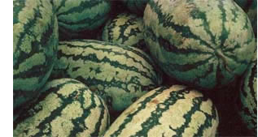
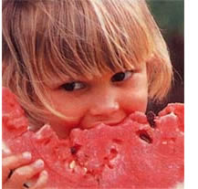
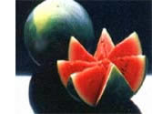

This great fruit deserves a fair shake.
The White House won't comment. Many Americans act as if it's something to hide. And the rest of the world thinks it's irrelevant. I'm talking about watermelon: cold, icy watermelon, thirst - quenching watermelon, gift of the gods, joy of unbridled childhood, pride of strutting youth. But as maturity and responsibility roll across our lives, our deep, abiding love for watermelon goes underground, sinks into the private psyche, the realm of quiet reverie, seldom to be acknowledged again - except, of course, on the Fourth of July, the one day we allow ourselves to celebrate its glories. Briefly and brilliantly visible on this national holiday, watermelon is normally exiled from polite society for the rest of the year. It may, in fact, be our last great taboo.
It is, first of all, awkward to grow, store and eat. Its unruly vines, some reaching 15 feet in length, sprawl across the rational plans and geometrical designs of tidy gardeners. Its bulky weight defeats all attempts at grace and poise. Hauling a watermelon from garden to kitchen is often a rite of passage for small boys. In the refrigerator, it subverts logic and efficiency, its oblong and globular shapes being uniquely illadapted for the flat shelves and right angles of modem storage. Its watery pulp is messy and sticky, and its ubiquitous seeds force the wouldbe eater to think carefully about the logistics of consumption and disposal. In short, watermelon is vaguely embarrassing to adult sensibilities.
It's easy to assume they're just too big for their britches.
The lives of virtually all Americans are tightly intertwined with watermelon memories. A friend in her seventies recalls packing her father's icehouse in Richmond, Virginia, with the first green fruits of summer. Watermelon chunks provided ammunition in the daily wars waged against her brother. Fraternity boys still pour quarts of gin into holes drilled in watermelons and allow the mushy concoction that results to marinate until drinkable.
Now that the Cold War belongs to history, Americans finally have the chance to take a fresh look at themselves. Our defense of freedom was long and arduous, but it will have been for naught unless we feel free to talk openly about watermelon. Almost alone among common foods, watermelon comes heavily burdened with connotations of race and class. It is, by itself, a dense, complex system of signs and meanings. No great nation can long endure when its best citizens fear to reveal their deepest yearnings. The time has come to bring this worthy fruit out of the closet.
Unlike President Bush, I harbor no grudge against broccoli. I am saddened, however, by his inadvertent insult to watermelons.He talks about broccoli ad nauseam but fails to call attention to the exemplary qualities of our secret passion. His silence speaks volumes about the plight of the watermelon.
In hopes of discovering that the oversight was a mistake, I called the press office at the White House for an official statement on Citrullus vulgaris. Does the president like watermelon? Will he admit it?
"I'll get back to you," said the first person I reached. She never did. "Look it up in Official Presidential Documents," said the second. I never did. Instead, I tried to pass a message to Mr. Bush through one of his jogging pals. No luck. I began to wonder whether stonewalling had returned to the White House. Are the shadows of Watergate lengthening again? Dare I name it Watermelongate?
Giving the president the benefit of the doubt, I next called Julian Bond, longtime civil rights advocate, to ask whether the president's silence was part of a subtle Republican strategy to attract African-American votes.
"No," said Bond, "most of us are no longer very sensitive about watermelon stereotypes. I don't like the taste of watermelon myself, and many of my friends never think about it at all. In my experience, white liberals show far more nervousness in the presence of watermelon than do their black friends."
Fortunately, the stonewalling at the White House has not yet spread throughout the rest of the government. At the U.S. Department of Agriculture (USDA), the watermelon specialists were as happy as Maytag repairmen to receive my calls. More responsive than I would have thought, or even wished, they quickly filled my post office box with folklore and facts on watermelons.
The origin of the species is obscure. Much evidence points to Africa, where it has been cultivated for 4,000 years. Having arrived, probably via Arab hands, in the Mediterranean regions of Europe early in the Christian era, watermelons were brought to the Western Hemisphere by both African slaves and European colonists. The first written record of the fruit's cultivation on the western side of the Atlantic was in the Massachusetts Bay Colony in 1629.
Some varieties, however, may have been indigenous to the New World. The early French explorers reportedly found Native Americans growing watermelons in the Mississippi Valley. Whatever its origins, the colonial watermelon was small by present standards, averaging on the low end of today's five to 50 pound range. (The world record is now a robust 260 pounds.)
Modern concerns about health may accelerate the return of the watermelon. Most Americans, I would wager, see little value in watermelons: harmless consumption, perhaps, but essentially an empty exercise with brightly colored water.
IN THE UNITED STATES, we associate watermelon with Southern culture and climate. Actually, some new varieties prefer cooler climes and shorter seasons. Even in the South, watermelons often do better in less humid regions and reach prime sweetness when deprived of water for two weeks before picking.
In the North, and in higher altitudes, it is advisable to start young seedlings indoors in large pots to insulate sensitive roots from too much movement. Although some modern gardeners plant watermelon in raised beds, most, particularly in the South, still drop five to seven seeds directly into small mounds of soil; the distance between the hills of seed is determined by the space requirements of specific varieties. Bush watermelon varieties-unrelated to President Bush-occupy less space, of course, but they also tend to be less flavorful and less productive.
Most varieties take from 80 to 120 days to reach maturity, although gardeners living in regions with long growing seasons should know that lateseason types usually have a richer taste. It's possible to grow a hybrid watermelon that produces yellow flesh-but what's the point? Real Americans eat red meat (come to think of it, maybe the White House wants to cover up the president's secret yen for the yellow stuff) and open-pollinated watermelons are every bit as good as their hybrid cousins, especially for the home gardener, who probably prefers to have fruits ripen at different times.
Determining ripeness is more of an art than a science. Thumping is useless. A ripe fruit is hard; but its skin will have lost some of its shine, and its underside is likely to show yellowing. A watermelon is usually ripe when the curly, pigtail tendril by the leaf closest to the fruit's stem looks dried up.
The wise gardener should understand that having a watermelon in the patch is a lot like having a teenager in the house. It's a voracious eater and drinker (97% water and a lazy couch potato to boot, accustomed to sucking up large volumes of nitrogen, phosphorus and magnesium and to lolling around on thick mattresses of compost and mulch. It's no wonder the watermelon hovers so close to the edge of human consciousness.
Some may see it as a nice garnish for a summer meal.
Thrifty folks know better. Over time they tend to select for value and in watermelon they have found a winner. It's practically fat-free, calorie-free, worry-free. According to a USDA booklet, growers use pesticides less intensively for watermelon than for other crops. And watermelon rates higher in vitamins A and C than apples. It's also cheaper.
It fits perfectly, in other words, into the modern profile of "lite" cuisine. Statistics assembled by the USDA show that domestic watermelon production, following a long decline between 1960 and the early I980s, is rapidly picking up speed. Most experts at the USDA suspect the turnaround is caused by "a modification to the consumption patterns of health-conscious consumers, the introduction of new varieties and the passage of a watermelon research and promotion program."
Yes, friends, there's a specialinterest group for watermelons, possibly even a watermelon-industrial complex in Washington. It is, of course, a collection of producers and handlers that calls itself the National Watermelon Association. According to a USDA publication, this group agreed in February 1989 to donate a portion of its profits in an effort to "bring the industry closer together and improve the image and sales of U.S. watermelons."
THE future of the watermelon looks bright. The health-and-self set is already viewing it as power food. A trendy catalog recently arrived in my post office box offering an entire page of pricey items with a watermelon theme: glasses, place mats, watches and trays. Governor Dukakis of Massachusetts bragged about his state's watermelons during his 1988 presidential campaign. Jim Hightower, commissioner of agriculture in Texas, talks about watermelon as a boutique alternative to the endangered monoculture economies of his state.
The liberation of watermelon is clearly under way. To speed the process, watermelon lovers should form a grass-roots organization to reject the fruit's history of neglect. Call it "Friends of the Watermelon" and arm it with a powerful political action committee. If this happens, no U.S. president will dare overlook the splendors of the watermelon again.
1-1/2pounds watermelon pieces, minus seeds and rind 10 ounces or 1-1/2 cups sugar
2 sticks cinnamon
Juice of a large lemon
Mash, liquidize or sieve the watermelon to make a smooth pulp. Simmer sugar with 2 cups of water and cinnamon sticks for 5 minutes. When cool, remove cinnamon and add the syrup gradually to the watermelon, stopping when the balance of fruit and sweetness seems right. Use the lemon juice to bring out the flavor.
Freeze in the usual way, at the lowest possible temperature. If you stir the sorbet from time to time, to keep the texture even, you can serve it at the granita stage, when it is a thick, grainy sludge. Very cooling.
Watermelon Soup
This watermelon version of a Russian soup is so delicate that it makes an ideal first course for a summer party.
1 melon weighing at least 2 pounds,
preferably more 5 ounces or 2/3 cup sugar 8 ounces or 1 cup dry white wine
Lemon juice 2/3 to 1-1/2 cups sour cream or creme fraiche
Discard seeds and scoop the flesh from the watermelon. Dissolve 1 pint or 2-1/2 cups water and the sugar in a pan over low heat, then simmer for 4 or 5 minutes.
Liquidize the melon with the wine, and gradually add the cooled syrup to taste. (But don't go overboard: Add a faint sharpener of lemon juice, and at least 5 ounces or 2/3 cup cream.)
Serve chilled, with almond biscuits or meringues.
Recipes are adapted by permission of Harold Ober Associates Inc from Jane Grigson's Fruit Book
(Atheneum,New York, 1982.
|
 SUPERSTOCK |
 SUPERSTOCK |
 ©FOUR BY FIVE |